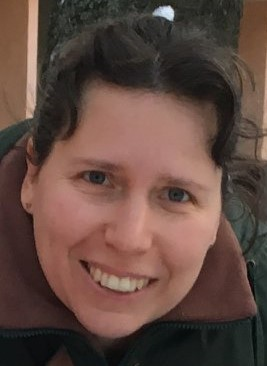
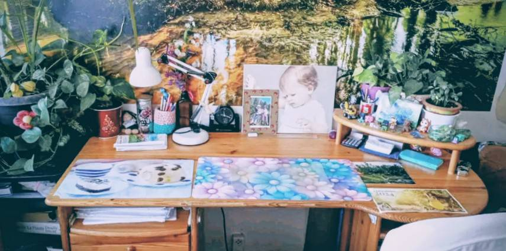
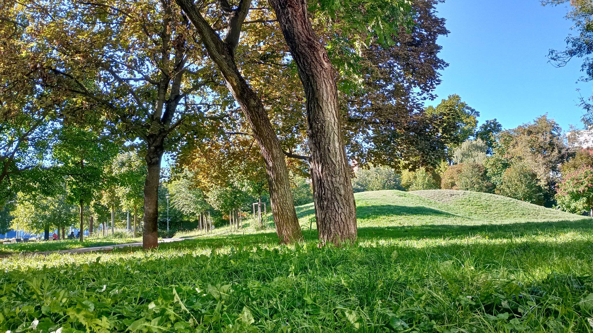

Alapos, egyéni felkészítés felvételire, érettségire, pótvizsgára
 |
Üdvözlek! Teológus diplomám, gyermek- és ifjúsági felügyelő, felsőfokú gyógypedagógiai asszisztens, kortárs-segítő, középfokú programozó, gazdasági informatikus végzettségem, B kategóriás jogosítványom és angol nyelvvizsgám (Rigó u., C típus) van. 30 éve főként matematikát és angolt tanítok, de van tapasztalatom minden tárgy oktatásában érettségiig mindenféle korosztályú és képességű (pl. autista, diszkalkúliás, ADHD-s) gyerekkel és felnőttel. Matematika tanári (ELTE TTK) és programozó matematikus (ELTE IK) tanulmányokat is folytattam (1-1 szemeszter, utána munkába álltam). Jelenleg informatikai tárgyakat tanítok egy technikumban. Személyre szabott tanítási módszereimmel segítek diákoknak elérni céljaikat, legyen az felvételi, érettségi vagy pótvizsga. Az én megközelítésem interaktív és motiváló, ahol minden diák egyéni figyelmet kap. Több helyen publikálták munkáimat (versek, kortárs segítés főleg). MEK-en vannak ingyen elérhető füzetkéim, pl.: Szóesésben (verseskönyvem), Mandala (színező), Beszédes halak (versek saját grafikáimmal) |


30 éves tanítási tapasztalattal rendelkezem, rengeteg diáknak segítettem már pótolni hiányosságait, megérteni és begyakorolni a tananyagot, sikeresen teljesíteni felvételijét, érettségijét vagy pótvizsgáját. Mindig egyéni tanítási tervet készítek minden diák számára, figyelembe véve az ő szintjét és céljait.
📞 Telefon: +36 20 357 1279
📧 Email: gabinenitanar@gmail.com
📍 Hely: Budapest (Óbuda, Flórián tér környéke) és online (Teams/Messenger/Viber/Zoom/Meet)
⏰ Órák: Hétfő-Péntek: 14-19h (tanítási szünetekben, ill. alkalmanként délelőtt is), Hétvégén: 8-18h
Facebook-om30 perc: 3300,-
45 perc: 4400,-
60 perc: 5500,-
Szünetekben és hétköznap délelőtt olcsóbbak az órák.